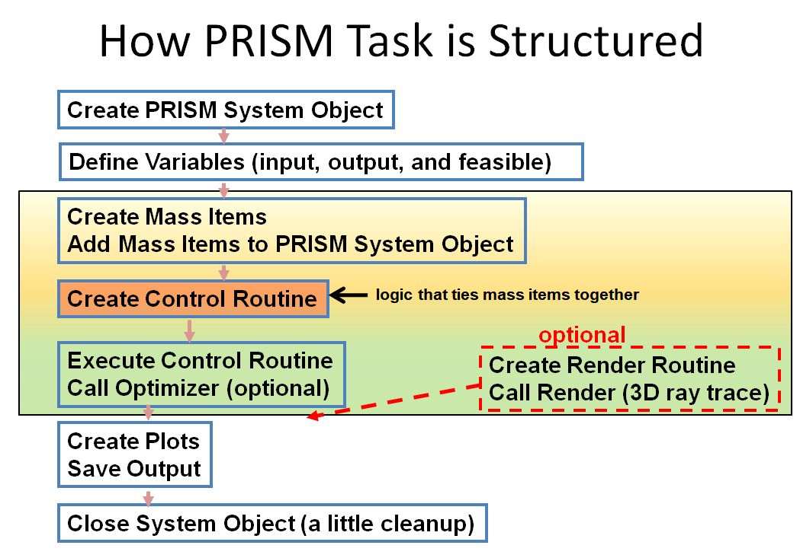
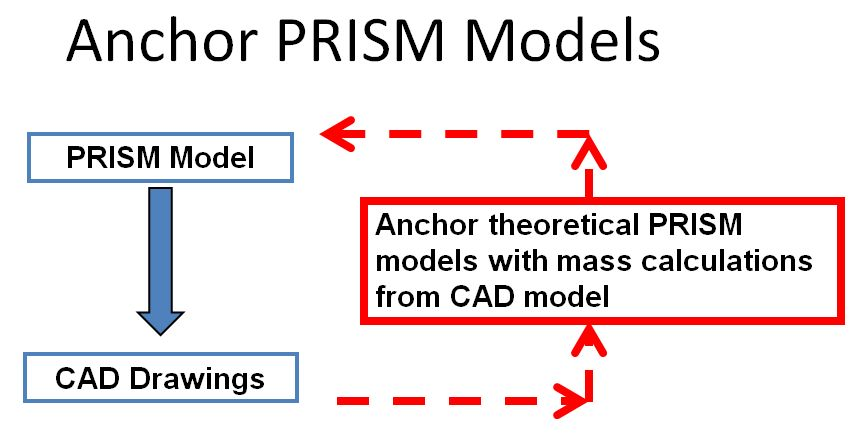

Math Model¶
When a more complex model is required than just the straightforward use of a building block, a complete math model is constructed.
A Math Model is Defined by System Level Variables of 3 types; Design, Result and Feasible and a control routine to coordinate the variables.
The flow of the math model is described in the diagram below.
In practice, the PRISM mass models are typically anchored to either existing hardware or to detailed CAD models.
{kind=link}
System Object¶
The PRISM system object SysModel is created to coordinate the analysis. It is created as shown below.
S = SysModel(programName='Overall Name', # title on output, top level name
name="Task Name", # title on charts, subtitle on output
type="analysis", # generic type of task
author="Skippy Rao", # author's name is attached to output
markdown_desc=markdown_desc, # creates Markdown documentation in HTML file
constraintTolerance=0.00001) # tolerance on constraint violations constrVal
The SysModel object can be called anything. My convention has been to name it capital s, S, which is assumed for the rest of this page.
Note that additional documentation can be added to the HTML output through the use of a Markdown text string. A summary of Markdown is located at Wikipedia Markdown .
Images can be included in the Markdown to help describe the task; look at Box Example on the Many Examples page.
The image directive is also described on the Wikipedia Markdown page.
Design Variables¶
- Design Variables: input to the system.
- may be a major component design variable
- may be a system level variable
The python statement(s) to define design variables include an initial design value, parametric range (minVal & maxVal), step size for parametric calculations, physical units and a description:
# name, design value, minVal, maxVal, step, units, description
S.addDesVars( ["PHe", 5000.0, 4000.0, 9000.0, 200.0, 'psia', 'Helium Tank Pressure'],
["MR", 2.0, 1.0, 2.4, 0.05, '', 'Engine Mixture Ratio'],
["Pc", 150.0, 150.0, 500.0, 20.0, 'psia', 'Engine Chamber Pressure'],
["pcentBell", 80.0, 60.0, 100.0, 5.0, '', 'Nozzle Percent Bell'],
)
Result Variables¶
- Result Variables: output from the system
- may be constrained
- (e.g. Total Impulse > 2000 lbf sec)
The python statement(s) to define result variables include a name, physical units and a description. The statement may also include a constraint type(constrCond) and value(constrVal). The constraint type is a single character, either ">" or "<". This type of constraint is usually used to constrain the optimizer. All plots in PRISM will place markers on locations that violate these constraints.:
# name, units, description constrCond, constrVal
S.addResultVars( ["sysMass", "lbm", "Total System Mass"],
[ "Isp", "sec", "Engine Specific Impulse"],
[ "Itot", "lbf-sec", "Total Impulse", ">", 2000.0] # <== Itot Constraint
)
Feasible Variables¶
- Feasible Variables: equality-constrained output
- an assigned input variable controls output value
- automatically uses an inner loop root solver
- (e.g. Propellant Mass varies to make delta V = 1000 ft/sec)
Note
The idea behind a Feasible Variable is to impose an Equality Constraint on a Result Variable
A python Feasible Variable statement actually defines two variables; a Design Variable and a Result Variable. Whenever the math model is called, it will solve for the design variable value that gives the desired result variable value.
For example, you might want to solve for the propellant load that gives the desired delta v, or the thrust that gives burnout gees, or the area ratio that gives the desired engine length, etc.
When solving the control variable value (i.e. the design variable), the allowable range for the root solver to explore is given by cvMinVal and cvMaxVal. If no root can be found, then the routine will fail and return a value of cvFailValue. It is usually best to define cvFailValue to be numerically legal, but very poor design such that the optimizer will move back into better design territory after exploring into poor territory.
Examples of Feasible Variables are shown below:
S.addFeasibleVariable( name="Lengine", feasibleVal=maxLengine,
units='in', desc='Axial Engine Length',
controlVar="eps", cvMinVal=10.0, cvMaxVal=600.0,
cvUnits='', cvDesc='Axial Engine Area Ratio')
S.addFeasibleVariable( name="deltaV",
feasibleVal=deltaVReqmt ,
units='ft/sec', desc='Vacuum Delta Velocity',
controlVar="WtPropAxial", cvMinVal=10.0, cvMaxVal=600.0,
cvUnits='lbm', cvDesc='Total Usable Axial Propellant')
Mass Items¶
A variety of MassItem objects are available in PRISM for engines, tanks, pressurization, lines, fluids, etc. Each of them is created with similar syntax. For example a fuel system might contain the following tank, fluid and line which are added to the SysModel after being instantiated.
# create fuel tank
Fltank = Tank(name="Fuel Tank", Number=NumberFuelTanks,
makeCompositeTank=0, kalmod=0, tMinGaugeUser=0.010,
matlName="Ti", vfree=486.0,ell=1.0,rcyltd=0.,
ptank=1400.0,sf=1.5,cxw=1.5,
ithcyl=1,kacqui=7,inpex=1,expefi=0.98,
tblad=0.030,tbond=0.030,ttrspc=0.010,
rhobnd=0.04,rhoacq=0.04,tliner=0.0,rholiner=0.04)
# add propellants
Fl = Inc_liquid(symbol=fuelName,T=TmaxOperate,P=14.7)
# add main propellant lines
FlLine = Line_Liq_inpD( name="Fuel Line", liqObj=Fl, matlName="Ti",
wdot=0.1, pLine=400.0, OD=0.5, thkWall=0.045,
len_inches=50.0, Kfactors=5.0, Number=1,
cxw=1.25, roughness=5.0E-6 )
#===== after they have been created, add the Mass Items to the system object ====
S.addMassItem( [ Fltank, Fl, FlLine] )
Control Routine¶
The control routine gets current values of design variables from SysModel, applies those inputs to the various MassItem objects, and sets the values of result variables.
# the following control routine ties together the system components
# with the system design variables
def myControlRoutine(S):
# get current values of design variables
Pc,PHe,MR = S("Pc","PHe", "MR")
# set engine
EngineRef.eps = eps
EngineRef.Pc = Pc
EngineRef.mr = MR
# <YOUR CODE HERE>
# .
# .
# .
# <YOUR CODE HERE>
# set result variables
S["Itot"] = Itot
S["sysMass"] = S.mass_lbm
S["Isp"] = EngineRef.Isp
S["IspSL"] = EngineRef.IspAmb
S["Lpackage"] = Lpackage
Exercise Model¶
The last step is to add any optimization, plots or documentation.
# need to tell system the name of the control routine
S.setControlRoutine(myControlRoutine)
S.reCalcItems()
# now optimize the system... it should match up with the sensitivity plots.
optimize(S, figureOfMerit="sysMass", desVars=["PHe","Pc"], findmin=1, useCOBYLA=0)
makeSensitivityPlot(S,figureOfMerit="Lengine", desVars=["PHe","Pc","MR"])
S.saveShortSummary()
# save full summary of system
S.saveFullSummary()
# Be sure to wrap-up any files
S.close()